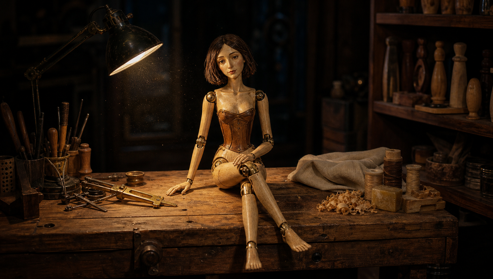
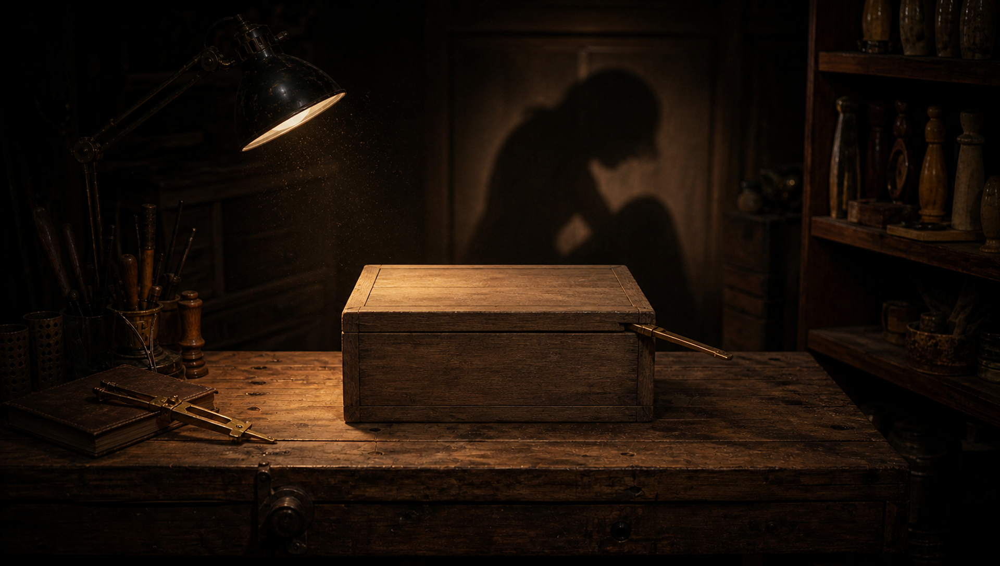

A 200-SECOND SCROLL FILM
Forty accepted takes become one uninterrupted reel. Your hand is the only clock.
SCROLL TO ENTER ↓
40 / 40 · ONE COMPLETE REEL
Four best-available defects remain disclosed. No shot was replaced, regenerated, or hidden.